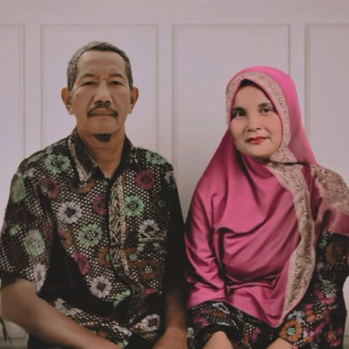
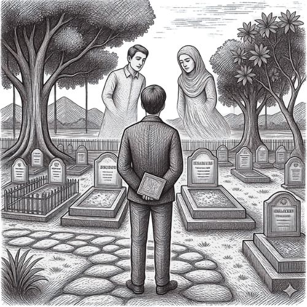
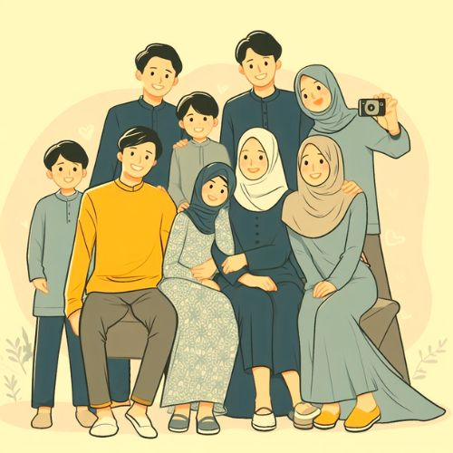

Keistimewaan Rokan Hulu
Tanah Melayu yang kaya budaya, alam, dan sejarah Sehingga dijuluki sebagai Negeri Seribu Suluk.
Budaya Melayu
Meresapi keanggunan tradisi Melayu Rokan Hulu yang sarat akan filosofi, mulai dari ritme Tari Randai yang memukau hingga teguhnya adat basandi syarak dalam menjaga identitas spiritual masyarakat yang luhur.
Pesona Alam
Menjelajahi kemurnian lanskap tropis Rokan Hulu yang eksotis, di mana sungai Rokan yang mengalir tenang bersatu dengan udara perbukitan yang menyegarkan, menciptakan simfoni alam yang menenangkan jiwa bagi setiap pengunjung.
Warisan Sejarah
Menelusuri jejak kegigihan perjuangan Tuanku Tambusai di Benteng Tujuh Lapis, sebuah situs bersejarah yang menjadi saksi bisu patriotisme masyarakat lokal dalam mempertahankan kedaulatan dengan semangat keberanian yang tak tergoyahkan.
Sekilas Gallery
Foto-foto yang merekam keindahan dan kenangan.



Artikel Pilihan
Catatan dan refleksi dari perjalanan belajar.

Anak Bungsu yang Melangkah Tanpa Tahu Akan Sampai di Mana
Tidak ada peta, tidak ada jaminan, tidak ada arahan. Hanya tekad dan doa orang tua yang jadi bekal perjalanan ini.

Kehilangan yang Tidak Pernah Benar-benar Selesai Dirasakan
Ada luka yang tidak terlihat tapi selalu terasa. Tentang rindu yang tidak tahu harus dikirim ke mana.

Orang Pertama yang Ada dan Orang Terakhir yang Pergi
Dalam setiap masalah ada yang menguatkan, dalam setiap kebahagiaan ada yang ikut merayakan. Itulah saudara.